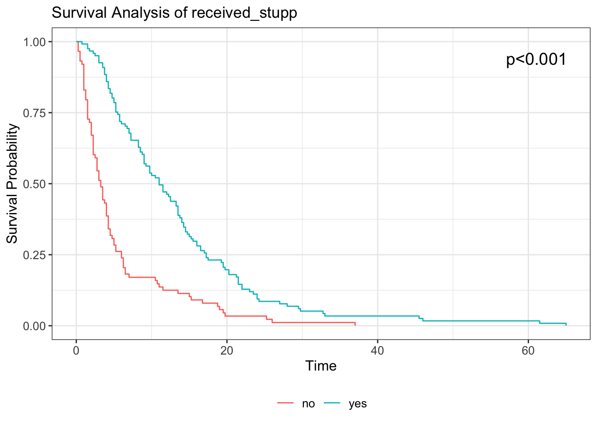

Initial Analysis
Overall Survival
This is a general picture of the overall survival of everyone in the data set. The red line represents the median value.
Significant Variables
Below are all of the individually significant variables I found in the dataset.
| variable | p_value |
|---|---|
| num_radiations | 0.000000e+00 |
| num_chemo | 0.000000e+00 |
| received_stupp | 9.551471e-12 |
| num_surgeries | 1.091004e-08 |
| resection_extent | 2.918417e-08 |
| discontinued_stupps | 3.968969e-08 |
| discontinued_treatment | 4.719659e-07 |
| caris | 8.304510e-03 |
| temporal | 1.979725e-02 |
| age_group | 2.707024e-02 |
| MGMT_methylation | 3.953298e-02 |
K-M Curves for Sig Variables


Mitotic Activity vs Ki67 Correlation
KM Curve for the categorical parts of the mitotic activity increase.
0 1to5 6to10 >10
5 53 39 31 
Seeing if there is trend between mitotic activity and Ki67
Fisher's Exact Test for Count Data
data: table(micat_df$mitotic_activity_increase, micat_df$Ki67_LI)
p-value = 0.0632
alternative hypothesis: two.sidedThere is a slight association between mitotic activity and Ki67. Interaction curve:

0.<15% 1to5.<15% 6to10.<15% >10.<15% 0.15% 1to5.15% 6to10.15%
3 14 4 3 0 4 5
>10.15% 0.>15% 1to5.>15% 6to10.>15% >10.>15%
3 1 33 27 23 Call:
coxph(formula = Surv(overall_survival, status == 1) ~ interaction_group,
data = micat_df)
n= 85, number of events= 85
(43 observations deleted due to missingness)
coef exp(coef) se(coef) z Pr(>|z|)
interaction_group1to5.<15% -0.1975 0.8208 0.7968 -0.248 0.8042
interaction_group6to10.<15% 1.4104 4.0975 1.2439 1.134 0.2569
interaction_group>10.<15% 0.2356 1.2657 1.0021 0.235 0.8141
interaction_group0.15% NA NA 0.0000 NA NA
interaction_group1to5.15% 0.4657 1.5932 0.8673 0.537 0.5913
interaction_group6to10.15% -0.4005 0.6700 1.0017 -0.400 0.6893
interaction_group>10.15% -0.4640 0.6288 0.9203 -0.504 0.6141
interaction_group0.>15% 2.1909 8.9432 1.2674 1.729 0.0839 .
interaction_group1to5.>15% 0.3122 1.3664 0.7419 0.421 0.6739
interaction_group6to10.>15% -0.2828 0.7537 0.7466 -0.379 0.7049
interaction_group>10.>15% -0.5556 0.5737 0.7517 -0.739 0.4598
---
Signif. codes: 0 '***' 0.001 '**' 0.01 '*' 0.05 '.' 0.1 ' ' 1
exp(coef) exp(-coef) lower .95 upper .95
interaction_group1to5.<15% 0.8208 1.2184 0.17217 3.913
interaction_group6to10.<15% 4.0975 0.2440 0.35784 46.919
interaction_group>10.<15% 1.2657 0.7901 0.17756 9.023
interaction_group0.15% NA NA NA NA
interaction_group1to5.15% 1.5932 0.6277 0.29109 8.720
interaction_group6to10.15% 0.6700 1.4926 0.09407 4.772
interaction_group>10.15% 0.6288 1.5905 0.10354 3.818
interaction_group0.>15% 8.9432 0.1118 0.74593 107.224
interaction_group1to5.>15% 1.3664 0.7319 0.31921 5.849
interaction_group6to10.>15% 0.7537 1.3268 0.17444 3.256
interaction_group>10.>15% 0.5737 1.7430 0.13148 2.503
Concordance= 0.613 (se = 0.034 )
Likelihood ratio test= 12.92 on 10 df, p=0.2
Wald test = 15.29 on 10 df, p=0.1
Score (logrank) test = 18.54 on 10 df, p=0.05Median Age Analysis

We see significance here, what about for dividing dataset into thirds?

And fourths?

MGMT Status

Benefit of methylated status comes out over time, greater overall survival.
MGMT Treated by Stupps

Overall, when treated with Stupps, median survival time increases.
| Received Stupps? | MGMT Status | Median Survival (Months) |
|---|---|---|
| no | M | 2.25 |
| yes | M | 14.50 |
| no | UM | 4.00 |
| yes | UM | 10.25 |
We see that Stupps + Methylated Status = longest median survival time. Kruskal-Wallis test to test for significance.
# A tibble: 4 × 6
stupps_mgmt count mean sd median IQR
<fct> <int> <dbl> <dbl> <dbl> <dbl>
1 no.M 33 4.93 8.02 2.25 2.25
2 yes.M 54 17.4 15.9 14.5 18.4
3 no.UM 76 6.01 6.10 4 4
4 yes.UM 106 11.3 6.36 10.2 7.88
Kruskal-Wallis rank sum test
data: overall_survival by stupps_mgmt
Kruskal-Wallis chi-squared = 54.143, df = 3, p-value = 1.046e-11Statistically significant difference in groups.
Initial Seizures and DVT/PE Data
Seizures Later
Seizures at Presentation no unclear yes
no 144 0 60
unclear 2 0 0
yes 36 1 31 DVT/PE Later
DVT/PE at Presentation no yes
no 216 51
yes 5 3


Looking at DVT/PE History
no yes
282 4